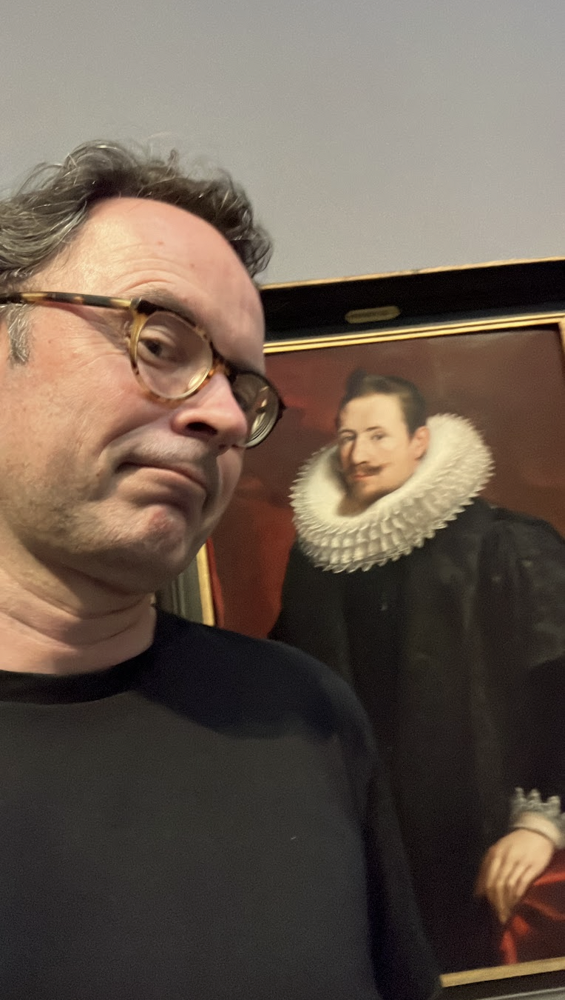

ABOUT

Wim Nelen is a Belgian painter exploring mood creation and atmosphere through landscape painting. He captures the energy inherent within the natural world with impasto oil paint, glazes, scumbles and sprays, creating visual intrigue and tension through mixing classical and contemporary techniques. His palet is characteristically vibrant and he works on large-scale canvases. The scale, vibrancy, depth and tactility of his work creates an experience that can only be fully appreciated in person. Wim's work is rooted in traditional landscape painting, but he is not bound by it. He draws inspiration from the works of Levitan, Sishkin, Thaulow, Caspar Friedrich, Odd Nerdrum, the Impressionists and Flemish masters as well as contemporary painters such as Doron Langberg, Jennifer Packer, Alex Kanevsky and Sebas Velasco. His work is a contemporary interpretation of the landscape genre, with a focus on mood and atmosphere.
Wim was born in 1978. Following an international career in finance and the successful exit of his software startup, he relocated to Rotselaar, in rural Flanders, where he began painting in his late 40s. To build a strong foundation, he enrolled in classes at his local art academy.
Please reach out via email to inquire about purchasing a painting, a studio visit or a potential collaboration.
NOTES.CFG
EDIT FREELYMAILING_LIST.SUB
JOINLeave your name and email to hear about new paintings and shows.